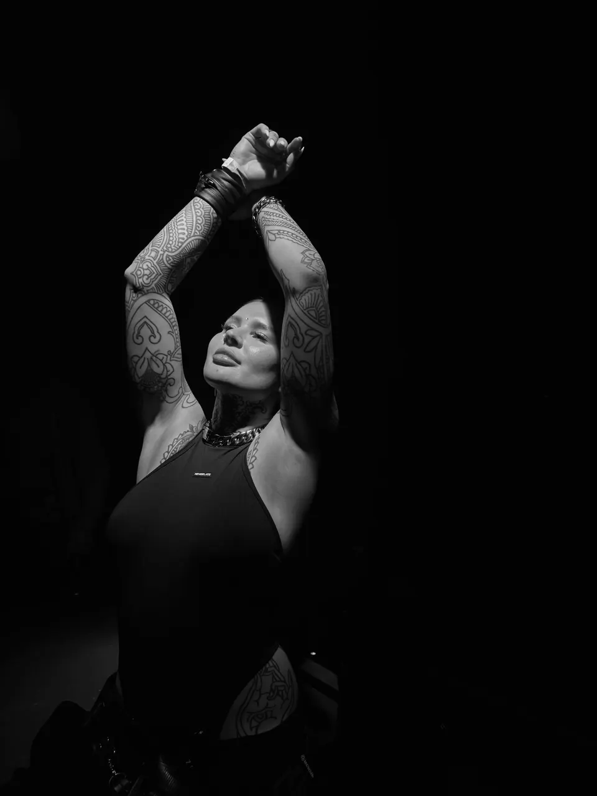
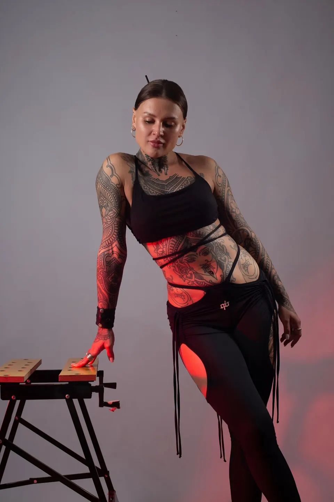

Bio
БиоVANGLERA — DJ, исследующая звучание на пересечении Sexy Groove, Hypnotic Techno и Dark Rave.
Её музыкальный язык формируют гипнотические ритмы, сложные звуковые текстуры и экспериментальный саунд. Искажённые голоса, чувственные детали, нестандартные ритмические решения и неожиданные сочетания элементов создают атмосферу напряжения, глубины и непредсказуемости, где грув становится отправной точкой для звуковых экспериментов.
Её погружение в андерграундную сцену началось задолго до диджейского пути. Многолетний интерес к клубной культуре, музыкальная насмотренность и постоянное исследование новых форм звучания сформировали собственное видение музыки и подход к созданию сетов.
Решение встать за пульт получило поддержку известных артистов и музыкантов, которые делились опытом и помогли освоить тонкости диджеинга. Соединив полученные знания с личным музыкальным опытом, VANGLERA продолжила самостоятельный поиск, стремясь выходить за рамки привычного и находить новые способы взаимодействия со звуком.
Глубокая связь с андерграундной культурой и активное присутствие в социальных сетях позволили ей сформировать широкое окружение и собственную аудиторию. Социальные платформы стали пространством для объединения людей вокруг музыки, эстетики и клубной жизни, расширяя эту связь далеко за пределы танцпола.
Звуковая ДНК
- IГипнотические ритмы
- IIСложные текстуры
- IIIИскажённые голоса
- IVЧувственные детали
- VНеожиданные сочетания
VANGLERA — это поиск собственного музыкального языка через звук, эстетику и эмоции. Постоянное движение, смелость эксперимента и стремление создавать атмосферу, в которой музыка ощущается не только слухом, но и всем телом.
Музыка ощущается не только слухом, но и всем телом
Sound
Звук
Последний сет · SoundCloud
Groove
Session 001
Сет, в котором грув становится отправной точкой для звуковых экспериментов.
Visuals
ВизуалЛистайте →
Press
ПрессаФото и тексты для промоутеров, медиа и афиш.
- Артист
- VANGLERA
- Жанры
- Sexy Groove · Hypnotic Techno · Dark Rave
- Последний сет
- GROOVE SESSION 001 ↗
- SoundCloud
- soundcloud.com/leraguru ↗